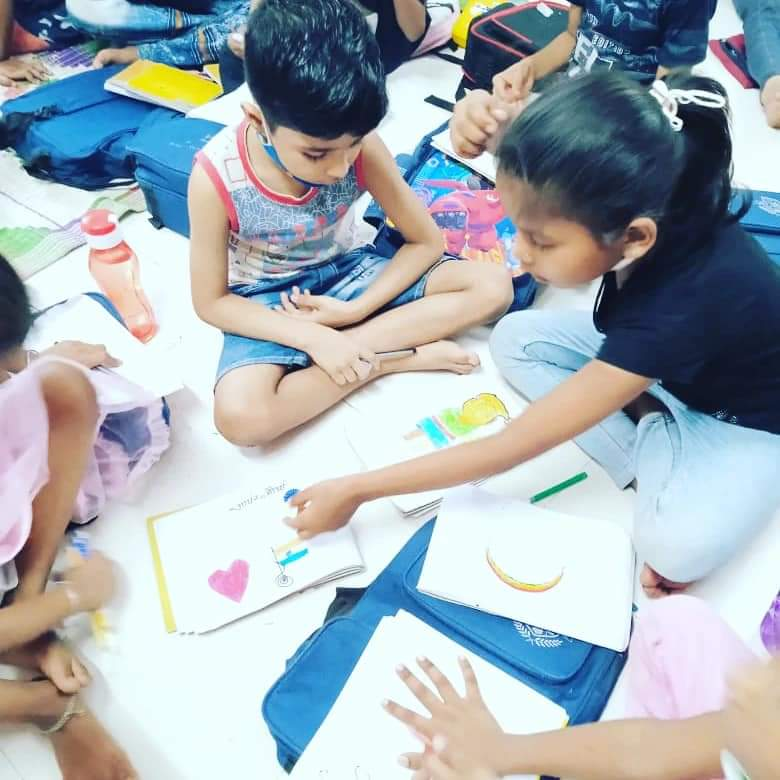

The Logic Centre and Community Welfare Association (LCCWA) was founded in 2012 by a group of concerned citizens including retired IIT-Bombay faculty member Prof. Amitabh Gupta, his wife Mrs. Chaitali Gupta and Prof. Agashe.
The primary objective of the organisation is to promote the idea of “Logic” amongst school going children and use it as a means to achieve welfare in the local community. How does LCCWA go about doing this? By providing supplementary education to under-privileged children and inculcate positive values through a combination of classroom teaching and real world experiences.
Today, about 150 children from the slums of Powai between the ages of 5 to 18 are beneficiaries of the association’s activities. Below is a brief description of the key forms in which LCCWA supports its children:

1. Classroom education:
2. Free meals:
3. Computer coaching:
In today’s day and age, computer literacy is as fundamental a skill as any. The association has set-up a computer lab which plugs this important gap in the children’s skill set.
4. 360 degree learning:
The team recognises that field trips and cultural activities are essential components to 360 degree learning experience for children. Visits to local business establishments helps gain a different perspective to students. They are encouraged to participate in extra-curricular activities and perform during events such as LCCWA’s foundation day – a marvellous event showcasing the students’ multi-faceted personalities and talents.